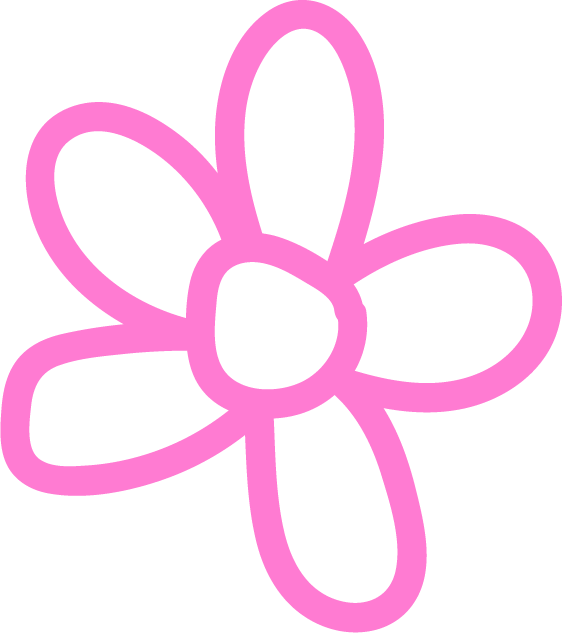
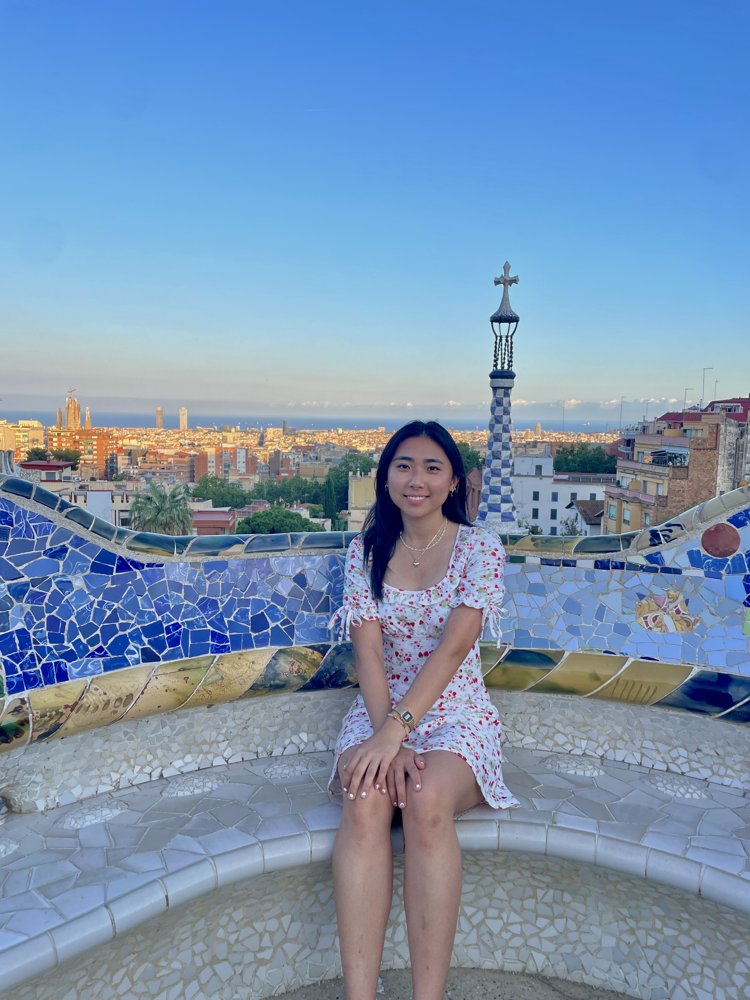
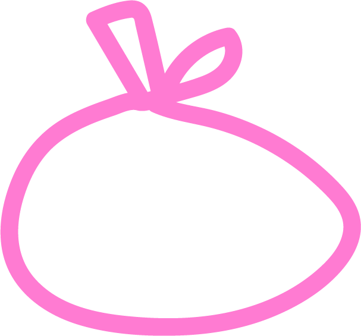
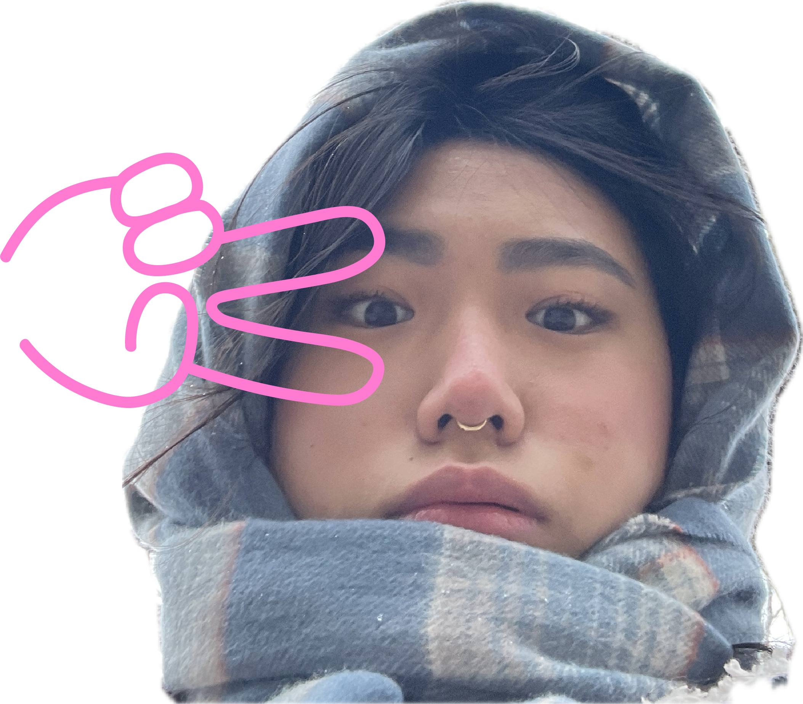

About me!
not just for them.

other works!

more about me 🪩
- aries; ESFP; enneagram 7
- favorite fruit atm: sumo orange 🍊!
- pretty good at sudoku
- not bad at tetris either
- I read 60 books in 2025! aiming for 55 for 2026
- trackpad wizard
- favorite gatorade flavors: lemon-lime, icy charge, arctic blitz
- did karate for ~10 years
- strong hatred for the airpods low battery notification sound
- i don't speak french